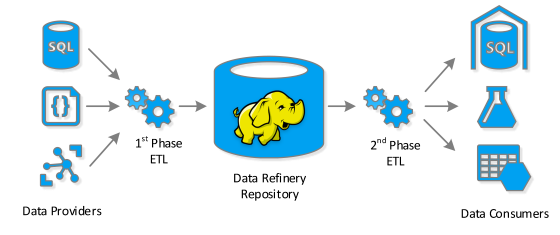

The Big Data Refinery
A pattern for handing multiple consumers of Big Data from the Big Data Group at Microsoft.
Author: Matthew Renze
Posted: 2016-07-11

The data refinery is a design pattern for providing data to multiple consumers in a Big Data context. The pattern is neither a data lake nor a data warehouse. However, it can be used in conjunction with both of these existing Big Data patterns to minimize duplication, enhance ETL performance, and optimize ROI on your Big Data strategy.
This pattern is currently being implemented within the Big Data Group at Microsoft to help manage hundreds of thousands of tables filled with exabytes of data. This article is the result of lessons that Roni Burd and the Big Data Group have shared with me regarding this pattern to help with the Big Data solutions I am implementing for my own clients.
The Problem
One of the main problems entailed in creating an effective Big Data strategy is determining where to apply schema to your data. Two prevailing Big Data patterns are the Data Lake and the Data Warehouse. With a data lake, we apply the schema when we read the data during queries. With a data warehouse, we apply the schema when we write the data. This allows us to perform fast ad hoc queries.
There are various pros and cons to using either a data lake or a data warehouse (or both). For example, with a data lake, we gain the benefit of very low-cost storage and distributed processing via technologies like MapReduce and Spark. However, we must run these queries against the raw data in a non-optimized format, which means there will often be a significant delay before our query returns with our result. In addition, querying against the untransformed raw data is much more difficult for end users (e.g. having to apply joins, calculations, and clean the data).
With a data warehouse, we gain the benefit of extremely fast queries, which allows us to work with our data in an ad hoc fashion. In addition, by having our data organized into a star schema with facts and dimensions, it is very easy for end users to work with these data in a self-serve BI fashion. However, there is an increase in cost, time, and effort to store the same data in a data warehouse vs a data lake.
Another problem that is encountered, is that we often have multiple consumers of our raw data. For example, we may have a data mart, machine learning systems, and 3rd-party data export services all relaying on the same source data. This means that we typically need multiple ETL (Extract, Transform, and Load) processes to provide data to each consumer in the appropriate format. This leads to significant duplication of logic and redundant data processing.
The Solution
The data refinery pattern attempts to solve several of these problems. In essence the pattern splits the ETL process (or processes) into two independent phases with a Hadoop-enabled low-cost repository in the middle. The process essentially works like this:
First, we collect and store all of our raw data in an inexpensive storage medium (e.g. blob storage). Essentially, we want to retain all of our raw data in its original, unmodified format, so we can always return to the source data if necessary. This step is the same whether you implement a data lake, data warehouse, a data refinery or all three patterns.
Next, we perform the first phase of the ETL process. In this phase of ETL we extract the raw data from the raw data repository. We transform the raw data into a highly denormalized data format. In addition, we apply data transformations and cleaning tasks that are common to all consumers. Then we load these data into inexpensive storage using an efficient columnar-storage format like Parquet.
Finally, as consumers require data from our data refinery, we perform the second phase of the ETL process. In this phase, we extract the necessary data from our data refinery's column-store storage using a distributed query-processing technology like MapReduce or Spark. Next we transform the data into a format specific to each consumer. We do not, however, need to apply any data transformation logic that is common to all the consumers in this phase, as these transformations have already been applied in the first phase of the ETL. Finally, we load these data into the consumers (e.g. data warehouse, machine learning system, etc.)
Real-World Example
For example, imagine that we have a sales transaction system as one of our data sources. A line item in the sales transaction data contains the transaction ID, product ID, the sale price, and the quantity of product sold. Most of the consumers of this data will need to know the product name and the total cost for the line item (i.e. sale price x quantity sold). So in the first phase of the ETL we apply the transformation to look up the product name in a look-up table via product ID. In addition, we calculate the total cost for the line item by multiplying the quantity of product sold and the sale price of the product.
This denormalized output table from the first phase of the ETL process, now contains the original fields plus the new fields (i.e. transaction ID, product ID, product name, sale price, quantity sold, and the line-item total). These data are now loaded into the data refinery's distributed data store. When any of our consumers needs to retrieve these records, they can retrieve them from the data refinery's repository with the product name and line-item totals readily pre-populated.
Now let's imagine that we have a predictive analytics system as one of our consumers of these sales transaction line items. Let's also assume that this system needs two other pieces of information to correctly make predictions about the profitability of our products using these records. For example, this consumer also needs the probability that this product will be returned (based on historical sales data) and the inflation-adjusted price of the product (which is created using a calculation). None of the other consumers of our sales transaction data need these extra fields of data, only the predictive analytics system. So in the second phase of the ETL process, we can look-up and compute these two extra fields of information for each record before loading them into the predictive analytics system.
This allows us to re-use the common transformations (e.g. look up product name and compute total line-item cost) in the first phase of the ETL for all of the consumers; since most if not all consumers need these pieces of additional information. In addition, it allows us to easily apply the one-off transformations (e.g. look up the probability of product being returned and calculate the inflation-adjusted price) in the 2nd-phase of the ETL.
Advantages
First, the data refinery pattern solves the problem of duplicated transformation logic as we apply this common logic only once in the first phase of the ETL process. Because there is only a single source of truth for the logic used to transform the raw data into a denormalized format, there is no need to update code in multiple ETL applications when a change in common data transformation logic occurs. This also eliminates the possibility of our logic being inconsistent across multiple ETL applications.
Second, the data refinery pattern eliminates redundant computation necessary to transform the data for multiple consumers. Since we apply all common transformations in the first phase of the ETL process, we do not need to reapply these common transformations for each of our consumer ETL processes. This saves us considerable CPU cycles, especially in scenarios where we have many consumers that all require the same data.
Third, this pattern makes it significantly easier and faster to perform queries against the data refinery's data stored in efficient column-store storage. While it's not as user friendly as a self-service BI solution riding on top of an enterprise data warehouse, it is still significantly more user-friendly than working with the raw data in its ungoverned format. In addition, because we've denormalized the raw data and stored it in an efficient storage format (e.g. Parquet) we can run our queries much faster than equivalent queries against the raw unoptimized data.
Finally, the data refinery pattern helps us deal with versioning issues in the raw data by allowing us to either massage the data in the first phase of the ETL process or by providing versioned views to the second phase of the ETL process. This means that many types of breaking changes in the raw data will not affect the consumers as they are shielded from these breaking changes by the data refinery.
Disadvantages
The main disadvantage of this solution is that it entails additional costs to create and maintain the data refinery system. We're essentially adding costs somewhere in-between creating a data lake and a data warehouse from scratch. However, if you are servicing multiple consumers (e.g. three or more) using the same data, we've significantly reduced our ETL creation and maintenance costs via de-duplication and reduced our operating costs by eliminating redundant operations.
Another disadvantage is that we are duplicating the raw data a second time in the data refinery's persistent storage – and this is a lot of data to be duplicating. However, we're storing these data in very low-cost persistence mediums (e.g. blob storage). In addition, since we're using column-store technologies like Parquet, we eliminate a lot of duplicate values via our columnar-storage format. Ultimately, relative to the other costs involved in an overall Big Data strategy, these storage costs are likely negligible.
The final disadvantage is that we're increasing the complexity of our Big Data system by adding an additional component to the system and another manifestation of the data. While this is a pretty significant increase in complexity, we are effectively trading off the complexity of having multiple independent ETL systems for each consumer by having a single first-phase ETL handing the bulk of the complexity and multiple, much simpler, second-phase ETLs for each consumer.
Contexts
This solution only makes sense within a few contexts with a specific set of constraints and optimization goals. The most important of these is the need to provide data to multiple consumers. If there is only a single consumer of the data, we will likely not receive benefits to this solution that outweigh the costs to implement it. However, if we have several consumers, the cost-benefit tips in favor of this solution.
In addition, this pattern only makes economic sense if the cost to store the data refinery's pre-processed data is relatively inexpensive. This is why we're using low-cost persistence mediums like blob storage with the data organized in a columnar-storage format like Parquet.
Finally, this pattern works best if the costs of creating, maintaining, and operating separate independent ETL processes for each consumer is relatively high. By implementing this pattern, we're reducing the creation and maintenance costs of the ETL process (via de-duplication of business logic) and the operating costs (by elimination redundant data transformations).
Summary
The software industry is currently going through a significantly transition as we learn how to manage Big Data. We see new big-data patterns and practices emerging on a daily basis. While none of these will magically make all of our Big Data issues disappear overnight, in certain contexts, some may be more applicable than others and thus reduce the cost and complexity of our solution. The data refinery pattern is another pattern for your Big-Data toolkit, that when used appropriately, can improve your overall Big Data strategy.
Share this article: